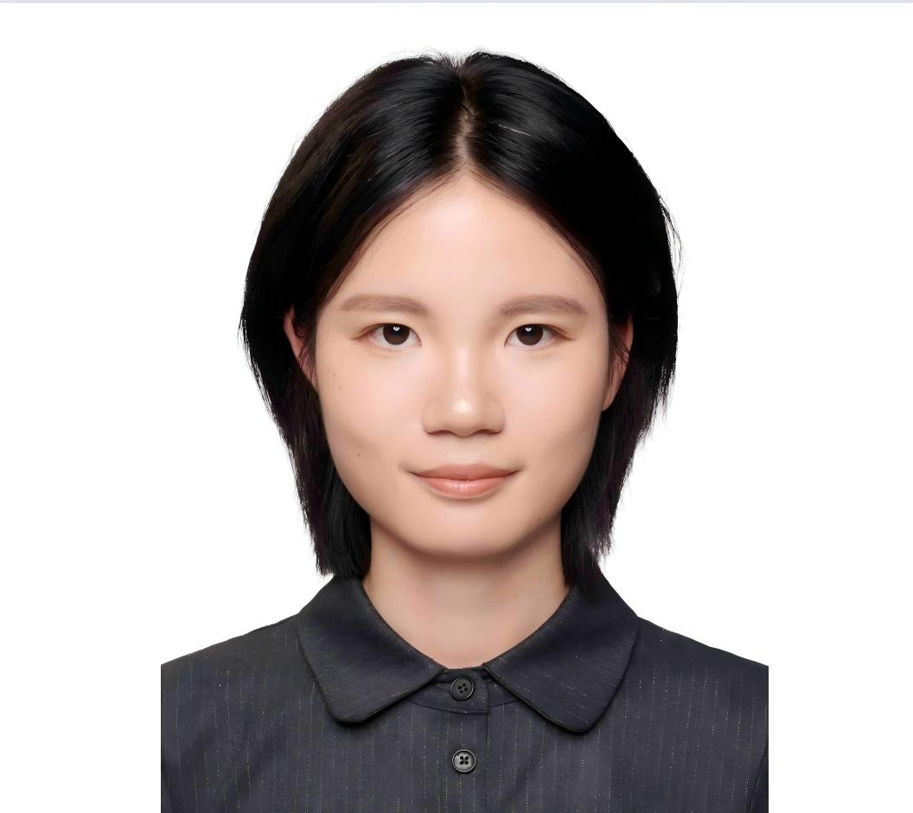

From Technology to Governance
将本地社区观察，
转化为协调一致的公共行动
在 Bantargebang 垃圾填埋场周边，地下水污染威胁着无数家庭的健康。AquaGuard AI 不仅是一个监测工具，它是一个连接公民科学、人工智能与公共机构的创新水治理机制。
在 Bantargebang 垃圾填埋场周边，地下水污染威胁着无数家庭的健康。AquaGuard AI 不仅是一个监测工具，它是一个连接公民科学、人工智能与公共机构的创新水治理机制。
在印度尼西亚最大的垃圾填埋场 Bantargebang 周边，水资源安全面临着前所未有的威胁，传统监测手段难以覆盖所有受影响的家庭。
未经充分处理的垃圾渗滤液渗透入地下水系统，导致周边社区井水出现发黄、异味及重金属超标现象。
由于缺乏替代水源，数以千计的家庭长期使用受污染的水，面临肠道疾病和长期慢病的高发风险。
官方实验室检测成本高昂、周期漫长，导致政府部门难以获得高频次、细粒度的实时污染分布数据。
AquaGuard AI 将智能手机转化为分布式的微型水质监测站。通过前沿的 AI 视觉分析模型，我们赋能当地居民自主检测水质，打破数据收集的壁垒。
居民仅需使用手机对准试纸或水样拍照，操作门槛低，无需复杂培训即可参与。
系统利用计算机视觉技术分析水样颜色与浊度，即刻返回初步的风险评估结果。

通过日常拍摄建立众包数据库，提高社区对水安全的意识与参与度。
汇总、清洗并分析海量图像数据，生成区域水质热力图与预警报告。
依据实时热力图精准分配干净水源，制定有效的填埋场修复与干预政策。
我们如何通过技术介入，最终实现环境与公共健康的长期改善。
在目标社区推广 AquaGuard 应用，分发简易检测试剂，培训基层志愿者掌握标准拍摄与上传流程。
AI 引擎持续处理上传的图像，实时生成水质风险地图，打破信息孤岛，让隐性污染透明化。
环保与卫生部门基于数据热力图，针对高危片区优先部署净水设备及提供医疗援助。
降低水相关疾病发病率，推动填埋场防渗工程升级，构建具有弹性的社区水资源治理体系。
AquaGuard AI 的可行性在于它无需在每户家中安装昂贵的物理传感器，而是巧妙地将手机应用、云端 AI 与公民参与相结合。直接贡献于联合国可持续发展目标（SDGs）。
通过广泛的社区参与，大幅降低了常规实验室拉网式监测的成本，帮助环保部门精准投放资金。
打破信息孤岛，直接为地方政府、环保部门及卫生机构提供来自一线的结构化观测数据支持。
清 IT UP 团队致力于利用技术推动社会与环境的积极改变。
* 排名不分先后


X